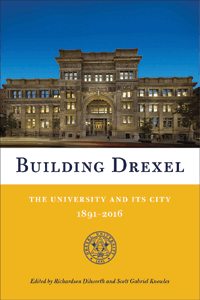

<body bgcolor="#FFFFFF" text="#000000" link="#0000FF" vlink="#CC0000" alink="#CC0000"><center><hr width="350" size="1" align="center" noshade>The first comprehensive history of Drexel University in Philadelphia<hr width="350" size="1" align="center" noshade><p><a href="https://cdcshoppingcart.uchicago.edu/Cart/ChicagoBook.aspx?ISBN=&&PRESS=temple" target="_top">Buy this book!</a> | <a href="https://cdcshoppingcart.uchicago.edu/Cart/Cart.aspx?PRESS=temple" target="_top">View Cart</a> | <a href="https://cdcshoppingcart.uchicago.edu/Cart/Cart.aspx?PRESS=temple" target="_top">Check Out</a></p><p></p></center><!--none//--><h1 class = "booktitle">Building Drexel</h1> <h1 class = "subtitle">The University and Its City, 1891-2016</h1>
<h3>Edited by Richardson Dilworth and Scott Gabriel Knowles</h3>
<p class="info">cloth: $35.00, Dec 16<BR>EAN:&nbsp;978-1-4399-1420-5<BR><font color=#990033>Available</FONT><font size=-7><br>&nbsp;</font></p><p class="info"></p></td></tr></table>
<BR> <p class="info">456 pp<BR> 6 x 9<BR> 45 color photos, 3 tables, 1 line drawings, 61 halftones <p class="info"><font size=-7>&nbsp;</font></p><p class="info">
</P><BLOCKQUOTE></BLOCKQUOTE>
<p>
Published in conjunction with Drexel University's 125th anniversary,<i> Building Drexel</i> chronicles the founding of the university by Anthony J. Drexel through to the present day. The editors and contributors create a prismatic discussion of the university and its evolution.<br>
<p>Richly illustrated chapters cover the architectural history of notable Drexel buildings; the role of Drexel in Philadelphia's modern history; its Greek life; sports-particularly Drexel's history in the Big 5; and each of the university's schools and colleges. There is a history of the medical college and law school, plus the creation of new schools such as those of biomedical engineering, science and health systems.<br>
<p><i>Building Drexel </i>also documents the civil rights history of Drexel and its urban planning history in relation to the racially diverse Powelton Village and Mantua neighborhoods it borders. This commemorative volume shows the development of the university both in the city and in the world.<br>
<p>Contributors include: Lloyd Ackert, Cordelia Frances Biddle, Paula Marantz Cohen, Donna Marie De Carolis, Roger Dennis, Gloria Donnelly, Kevin D. Egan, Alissa Falcone, David Fenske, John A. Fry, Stephen F. Gambescia, Marla J. Gold, Charles Haas, Kathy Harvatt, Daniel Johnson, Jeannine Keefer, Larry Keiser, Michael Kelley, Jason Ludwig, Jonson Miller, Julie Mostov, Danuta A. Nitecki, Anthony M. Noce, Steven J. Peitzman, David Raizman, Tiago Saraiva, Amy E. Slaton, Nathaniel Stanton, Virginia Theerman, Laura Valenti, James Wolfinger, Eric A. Zillmer, and the editors.
<br>
<P CLASS="top"><A HREF="#top">BACK TO TOP</A></P>&nbsp;<h2 class="inpageheading"><A NAME="excerpt"></a>Excerpt</h2><p>
Read the Introduction (pdf).
<br>
<P CLASS="top"><A HREF="#top">BACK TO TOP</A></P>
<BR>&nbsp;
&nbsp;<P>
<h2 class="inpageheading"><A NAME="contents"></a>Contents</h2><P><SPAN STYLE="font-family: 'Verdana';font-size: 13px;" >Foreword &bull; </SPAN><SPAN STYLE="font-family: 'Verdana';font-size: 13px;font-style:italic;" >Anthony M. Noce</SPAN><SPAN STYLE="font-family: 'Verdana';font-size: 13px;" ><BR>Acknowledgments<BR>Timeline of Drexel History, 1889&ndash;Present<BR><BR>Introduction: Drexel at 125 and 150: Celebrating History with an Eye to the Future &bull; </SPAN><SPAN STYLE="font-family: 'Verdana';font-size: 13px;font-style:italic;" >John A. Fry</SPAN><SPAN STYLE="font-family: 'Verdana';font-size: 13px;" ><BR><BR>1. Drexel, Philadelphia, and the Urban Ecology of Higher Education &bull; </SPAN><SPAN STYLE="font-family: 'Verdana';font-size: 13px;font-style:italic;" >Richardson Dilworth</SPAN><SPAN STYLE="font-family: 'Verdana';font-size: 13px;" ><BR>2. Anthony Joseph Drexel: The Evolution of a Philanthropist &bull; </SPAN><SPAN STYLE="font-family: 'Verdana';font-size: 13px;font-style:italic;" >Cordelia Frances Biddle</SPAN><SPAN STYLE="font-family: 'Verdana';font-size: 13px;" ><BR>3. Continuous Reinvention: A History of Engineering Education at Drexel University &bull; </SPAN><SPAN STYLE="font-family: 'Verdana';font-size: 13px;font-style:italic;" >Alissa Falcone, Scott Gabriel Knowles, Jonson Miller, Tiago Saraiva, and Amy E. Slaton</SPAN><SPAN STYLE="font-family: 'Verdana';font-size: 13px;" ><BR>4. The Sciences at Drexel: Instruction, Service, and Research &bull; </SPAN><SPAN STYLE="font-family: 'Verdana';font-size: 13px;font-style:italic;" >Lloyd Ackert</SPAN><SPAN STYLE="font-family: 'Verdana';font-size: 13px;" ><BR>5. Drexel&rsquo;s Architecture: Encountering the Urban Campus &bull; </SPAN><SPAN STYLE="font-family: 'Verdana';font-size: 13px;font-style:italic;" >Amy E. Slaton</SPAN><SPAN STYLE="font-family: 'Verdana';font-size: 13px;" ><BR>6. The History of Athletics and Student Life at Drexel University &bull; </SPAN><SPAN STYLE="font-family: 'Verdana';font-size: 13px;font-style:italic;" >Eric A. Zillmer</SPAN><SPAN STYLE="font-family: 'Verdana';font-size: 13px;" ><BR>7. Greek Life at Drexel &bull; </SPAN><SPAN STYLE="font-family: 'Verdana';font-size: 13px;font-style:italic;" >Michael Kelley and Anthony M. Noce</SPAN><SPAN STYLE="font-family: 'Verdana';font-size: 13px;" ><BR>8. The Creative Impulse: Theater, Dance, Music, and the Artistic Collections of Drexel University &bull; </SPAN><SPAN STYLE="font-family: 'Verdana';font-size: 13px;font-style:italic;" >Virginia Theerman</SPAN><SPAN STYLE="font-family: 'Verdana';font-size: 13px;" ><BR>9. The Past and Future of the Library at Drexel University &bull; </SPAN><SPAN STYLE="font-family: 'Verdana';font-size: 13px;font-style:italic;" >Danuta A. Nitecki</SPAN><SPAN STYLE="font-family: 'Verdana';font-size: 13px;" ><BR>10. One Hundred and Twenty- Five Years of Computing and Information Education and Research &bull; </SPAN><SPAN STYLE="font-family: 'Verdana';font-size: 13px;font-style:italic;" >David Fenske</SPAN><SPAN STYLE="font-family: 'Verdana';font-size: 13px;" ><BR>11. From the Business Department, to the Secretarial School, to the LeBow College of Business &bull; </SPAN><SPAN STYLE="font-family: 'Verdana';font-size: 13px;font-style:italic;" >Daniel Johnson<BR></SPAN><SPAN STYLE="font-family: 'Verdana';font-size: 13px;" >12. Pilot &rsquo;71: From Home Economics to Design, Media, and Beyond in the Westphal College &bull; </SPAN><SPAN STYLE="font-family: 'Verdana';font-size: 13px;font-style:italic;" >David Raizman</SPAN><SPAN STYLE="font-family: 'Verdana';font-size: 13px;" ><BR>13. Drexel, Urban Renewal, and Civil Rights &bull; </SPAN><SPAN STYLE="font-family: 'Verdana';font-size: 13px;font-style:italic;" >James Wolfinger</SPAN><SPAN STYLE="font-family: 'Verdana';font-size: 13px;" ><BR>14. The End of Urban Renewal: Area V and Drexel&rsquo;s Expansion into Powelton Village &bull; </SPAN><SPAN STYLE="font-family: 'Verdana';font-size: 13px;font-style:italic;" >Jeannine Keefer</SPAN><SPAN STYLE="font-family: 'Verdana';font-size: 13px;" ><BR>15. Drexel&rsquo;s Vietnam War &bull; </SPAN><SPAN STYLE="font-family: 'Verdana';font-size: 13px;font-style:italic;" >Jonson Miller</SPAN><SPAN STYLE="font-family: 'Verdana';font-size: 13px;" ><BR>16. The University and the Urban Metabolism: Environmental Engineering at Drexel &bull; </SPAN><SPAN STYLE="font-family: 'Verdana';font-size: 13px;font-style:italic;" >Charles Haas</SPAN><SPAN STYLE="font-family: 'Verdana';font-size: 13px;" ><BR>17. The Humanities at Drexel &bull; </SPAN><SPAN STYLE="font-family: 'Verdana';font-size: 13px;font-style:italic;" >Paula Marantz Cohen</SPAN><SPAN STYLE="font-family: 'Verdana';font-size: 13px;" ><BR>18. The Pennoni Honors College: Pragmatism in the Pursuit of Academic Excellence &bull; </SPAN><SPAN STYLE="font-family: 'Verdana';font-size: 13px;font-style:italic;" >Kevin D. Egan</SPAN><SPAN STYLE="font-family: 'Verdana';font-size: 13px;" ><BR>19. Drexel Gains a Medical School &bull; </SPAN><SPAN STYLE="font-family: 'Verdana';font-size: 13px;font-style:italic;" >Steven J. Peitzman</SPAN><SPAN STYLE="font-family: 'Verdana';font-size: 13px;" ><BR>20. Nursing and Health Professions: Two Schools Become One at Drexel &bull; </SPAN><SPAN STYLE="font-family: 'Verdana';font-size: 13px;font-style:italic;" >Gloria Donnelly, Stephen F. Gambescia, and Laura Valenti</SPAN><SPAN STYLE="font-family: 'Verdana';font-size: 13px;" ><BR>21. Drexel&rsquo;s Newest Schools: Biomedical Engineering, Science and Health Systems; Education; Public Health; Law; Entrepreneurship; and Hospitality and Sports Management &bull; </SPAN><SPAN STYLE="font-family: 'Verdana';font-size: 13px;font-style:italic;" >Donna Marie De Carolis, Marla Gold, and Larry Keiser</SPAN><SPAN STYLE="font-family: 'Verdana';font-size: 13px;" ><BR>22. A Decade of Legal Education at Drexel &bull; </SPAN><SPAN STYLE="font-family: 'Verdana';font-size: 13px;font-style:italic;" >Roger Dennis</SPAN><SPAN STYLE="font-family: 'Verdana';font-size: 13px;" ><BR>23. Drexel&rsquo;s Global Reach &bull; </SPAN><SPAN STYLE="font-family: 'Verdana';font-size: 13px;font-style:italic;" >Julie Mostov</SPAN><SPAN STYLE="font-family: 'Verdana';font-size: 13px;" ><BR>24. From the Physical to the Virtual with Drexel University Online &bull; </SPAN><SPAN STYLE="font-family: 'Verdana';font-size: 13px;font-style:italic;" >Kathy Harvatt</SPAN><SPAN STYLE="font-family: 'Verdana';font-size: 13px;" ><BR>25. The Promise of a New Century: Drexel and the City Since the 1970s &bull; </SPAN><SPAN STYLE="font-family: 'Verdana';font-size: 13px;font-style:italic;" >Scott Gabriel Knowles, Jason Ludwig, and Nathaniel Stanton</SPAN><SPAN STYLE="font-family: 'Verdana';font-size: 13px;" ><BR><BR>Contributors<BR>Index</SPAN></P>
<P CLASS="top"><A HREF="#top">BACK TO TOP</A></P>
</P><BR>&nbsp;
<H2 class="inpageheading"><A NAME="author bio"></a>About the Author(s)</H2><p>
<b>Richardson Dilworth</b> is Professor of Politics and Director of the Center for Public Policy at Drexel University. He is the author of <i>The Urban Origins of Suburban Autonomy</i>, and the editor or coeditor of five books, including <i>Social Capital in the City: Community and Civic Life in Philadelphia</i> (Temple) and, most recently with Christine Palus, the <i>CQ Press Guide to Urban Politics and Policy in the United States</i>.
<br>
<p>
<b>Scott Gabriel Knowles</b> is Associate Professor in the Department of History at Drexel University. He is the author of <i>The Disaster Experts: Mastering Risk in Modern America</i>, and editor of <i>Imagining Philadelphia: Edmund Bacon and the Future of the City</i>.
<br>
<P CLASS="top"><A HREF="#top">BACK TO TOP</A></P>
<p><h2 class="inpageheading"><A NAME="subjects"></a>Subject Categories</h2><P><A HREF="/tempress/education.html" TARGET="_top">Education</a><BR><P><A HREF="/tempress/history.html" TARGET="_top">History</a><BR><P><A HREF="/tempress/philly.html" TARGET="_top">Philadelphia Region</a></P></P>
</p>
<P>
</P>
<p align="center"><a href="https://cdcshoppingcart.uchicago.edu/Cart/ChicagoBook.aspx?ISBN=&&PRESS=temple" target="_top">Buy this book!</a> | <a href="https://cdcshoppingcart.uchicago.edu/Cart/Cart.aspx?PRESS=temple" target="_top">View Cart</a> | <a href="https://cdcshoppingcart.uchicago.edu/Cart/Cart.aspx?PRESS=temple" target="_top">Check Out</a></p><p><font face="Arial" size="1"><a href="copyright.html" onMouseOver="window.status='Web Copyright Policy';return true;" onMouseOut="window.status=''" title="Web Copyright Policy">&copy;</a> 2017 <a href="http://www.temple.edu" target="new" onMouseOver="window.status='Link to Temple University home page';return true;" onMouseOut="window.status=''" title="Link to Temple University home page">Temple University</a>. All Rights Reserved. http://www.temple.edu/tempress/titles/2428_reg.html</font></p>